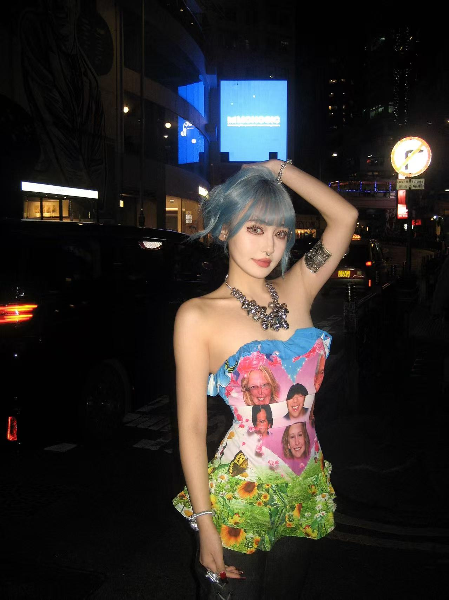

超现实主义者，致力于呈现不同媒介以及多维度的视觉联系，探索领域边界并嵌入个人视觉语言，参与多次商业体及品牌项目。
日常生活中关注设计、音乐、时尚方面的咨询，同时也是我的爱好。
A surrealist. I create visual connections across media and dimensions, explore boundaries, and build my own visual language.
I’ve worked on many commercial and brand projects. I follow design, music, and fashion news—these are also my hobbies.
Mail：chuliu6666@gmail.com